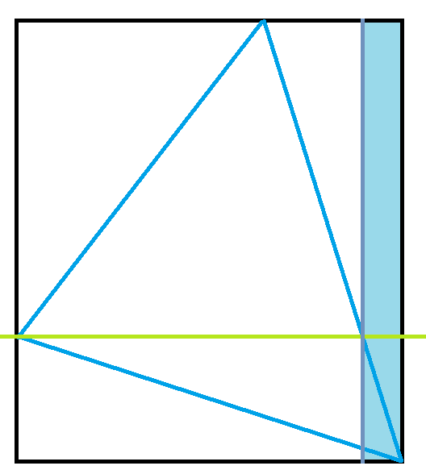

AGC036 赛后总结
比赛链接：https://atcoder.jp/contests/agc036/tasks
A. Triangle
题目链接：https://atcoder.jp/contests/agc036/tasks/agc036_a
题目大意：要求构造一个整点三角形满足面积是 $\frac{S}{2}$ 。
我的做法
首先注意到有一边平行于坐标轴就肯定构造不出 $S$ 是素数解的情况。
因此考虑这么一张图：

注意到上面的三角形在面积乘 $2$ 后相比正方形会删去浅蓝色区域，于是考虑以此为基础给一组构造。
于是就得到下面这么一个构造：
给一个 $h$ ，得到宽度：$w=\left \lceil \frac{S}{h} \right \rceil$ 。
设 $\epsilon = hw-S$ 。
那么其中一个点在 $(0,\epsilon)$ ，一个点在 $(w-1,h)$ ，一个点在 $(w,0)$ 。
由于长宽还有范围要求，所以建议直接把 $h$ 拉到能拉到的最大，但是在比赛时我的选择是 $\left\lceil\sqrt{n}\right\rceil$ 。
1 |
|
还是麻烦了，可以不用写这个二分的。
1 |
|
其余做法
每日一个求三角形面积小技巧。
对于三点 $(x_1,y_1),(x_2,y_2),(x_3,y_3)$ ，其的面积就是 $|\frac12\begin{vmatrix}x_1&y_1&1\\x_2&y_2&1\\x_3&y_3&1\end{vmatrix}|$ 。
原理就是添加一个高度 $1$ ，然后在三维用行列式算其体积。
当然，如果 $x_1=y_1=0$ ，可以直接在二维中利用叉积计算面积，就是：$\frac{1}{2}|x_2y_3-x_3y_2|$ 。
因此，在本题中，我们不妨假设 $x_2=10^9,y_2=1$ 。
这样就可以得到 ：$y_3=\left\lceil\frac{S}{10^9}\right\rceil$ ，然后 $y_2=x_2y_3-S$ 。
显然不需要担心共线问题，因此共线的话上面算出来会是 $0$ ，不是 $0$ 就说明 $(x_2,y_2),(x_3,y_3)$。 不是共线的。
B. Do Not Duplicate
题目链接：https://atcoder.jp/contests/agc036/tasks/agc036_b
题目大意：给你一个长度为 $n$ 的数组和一个空栈，然后你可以对栈执行一个操作：
如果 $x$ 在栈，弹出到 $x$ 不在栈中，否则加入栈。
依次对数组从左到右每个元素执行此操作，重复这个过程 $K$ 次，问最后栈是啥。
我的做法
注意到一个事情，一个栈会从非空到空当且仅当栈底元素进行了操作。
因此当栈为空加入 $x$ 时，下一次栈为空就是 $x$ 下一次入栈的时候，因此可以在数组上维护每个位置下一个出现相同数字的位置，实现出现空栈的位置的快速转移，而这个过程对于数组中每个位置，下一次出现空栈的位置是固定的。
所以会有循环，直接快速计算就行了。
等到最后不会出现空栈时，肯定只会剩下不超过 $n$ 个元素，直接模拟就行了。
时间复杂度：$O(n)$ 。
1 |
|
update：注意到这个有向图不只是每个点出度为 $1$ ，入度也为 $1$ ，因此每个点都在一个环上，所以代码可以更短更好写。
1 |
|
C. GP 2
题目链接：https://atcoder.jp/contests/agc036/tasks/agc036_c
题目大意：每次你可以选择两个数字进行操作，一个 $+1$ ，一个 $+2$ ，问进行 $M$ 次后有多少种不同的结果。
我的做法
很有感觉的一道题目，难在既要找条件又要计数。
首先注意到一个事情：最大值必须 $\le 2M$ ，但是这显然不是充要的，注意到如果有超过 $M$ 个 $1$ ，那么肯定不是可行解。
由此又注意到只会有和 $M$ 奇偶性相同且 $\le M$ 个数字是奇数（事实上在和为 $3M$ 时这句话可以直接换成：$\le M$ 个数字是奇数）
那么这是充要的吗？是的，用归纳法证明一下就行了。
接下来就是计数，注意到我们可以枚举奇数的个数，然后把剩下的数字两个两个分，但是这样最大值可能爆 $2M$ ，但是注意到如果最大值 $>2M$ ，那么奇数个数一定 $\le M$ ，所以所有最大值 $>2M$ 的分配都会被恰好记一次，直接删去即可。
所以答案就是：$\sum\limits_{i=0}^{min(n,M)}\binom{n}{i}\binom{\frac{3M-i}{2}+n-1}{n-1}-\sum\limits_{i=2M+1}^{3M}\binom{n}{1}\binom{3M-i+n-2}{n-2}$ 。
时间复杂度：$O(n)$ 。
1 |
|
update：最后容斥那个部分，还有一个组合意义，就是如果我直接把最大值减去 $2m+1$ ，那么就变成 $m-1$ 个数字分配，因此又可以写成：$n\binom{M+n-2}{n-1}$ 。
再看前面容斥的那个式子，可以写成：$n\sum\limits_{i=0}^{M-1}\binom{i+n-2}{n-2}$ ，在杨辉三角形上，其对应的一条斜线，所以可以写成：$n\binom{M+n-2}{n-1}$ 。
注意到上面的等式为：$\frac{1}{(n-2)!}\sum\limits_{i=0}^{M-1}\frac{(i+n-2)!}{i!}=\binom{M+n-2}{n-1}$ 。
这启示我们连续 $n$ 个数字相乘的和可以用组合数进行快速计算。
D. Negative Cycle
题目链接：https://atcoder.jp/contests/agc036/tasks/agc036_d
题目大意：现在有 $n-1$ 条不能删的边 ：$(i,i+1,0)$ ，同时又有 $n(n-1)$ 条边，对于 $i\to j$ ，如果 $i<j$ ，边权就是 $-1$ ，反之为 $1$ ，问需要花多少代价删边后图中没有负环。
做法
非常有意思的一道题目，需要注意到负环和最短路之间密切的关系。
我们令 $d$ 数组为从 $1$ 开始跑最短路得到的数组，由于不能删的边的存在，$d$ 是非升的，显然，任何一个不存在负环的图都对应这么一个 $d$ ，我们希望在知道 $d$ 的情况下保留尽可能多的边。
注意到只能保留非同段的 $-1$ 和同段或者相邻段的 $1$ 。
因此直接设 $dp[i][j]$ 表示最后一段为 $[j+1][i]$ 的最小代价就行了。
时间复杂度：$O(n^3)$ 。
1 |
|
E. ABC String
题目链接：https://atcoder.jp/contests/agc036/tasks/agc036_e
题目大意：给你一个只有 $A,B,C$ 的字符串，要求找到最长的一个子序列，满足相邻字符不同，而且每个字符出现次数相同。
我的做法
又是屎中屎讨论，吐了。
注意到可以先把原串变成相邻字符不同，毕竟相邻的相同字符无论如果只会出现一次，因此这样子变换不会影响最终答案。
换一下字符，满足 $A\ge B\ge C$ （出现次数）。
然后注意到在不管 $A$ 的情况下，剩下的 $BC$ 可以分成若干段 $BCBCB…$ ，相邻段满足首位字母相同，例如：$BCB,BC,CB$ 。
注意到每一段中间的 $A$ 都可以删完，所以 $A$ 个数此时的下界为段数 $-1$ ，而且显然当前 $A$ 的个数和下界中间任何一个数字都能取到。
我们考虑先让 $B=C$ ，为了降低 $A$ 的下界（后面会看到，$A$ 的下界比较高的话，可能会在后面产生浪费），我们希望能最小化段数，因此明智的删法就是删每一段开头结尾的 $C$ ，然后缝合两段，由于 $C>B$ ，总是存在这样的 $C$ 直到只剩下一段，这个时候就只能删开头了。
注意到这个过程中，每次删一个 $C$ ，也可能会删一个 $A$ ，但不会影响 $A\ge B\ge C$ 的偏序关系。
在 $B=C$ 后，如果下界 $\le C$ ，那么我们就可以得到一个取到上界的解，就是 $3C$ ，但是如果不是，注意到此时一定会有孤立的 $B,C$ ，删一个 $B,C$ （其实只要删 $B,C$ 的时候能让段数减少就行，但是直接删孤立的 $B,C$ 是最方便的），直到下界等于 $C$ 即可。
但是这为什么是对的呢？ $ans=3C$ 的情况可以理解，但是 $ans<3C$ 的呢？注意到另外一个限制条件：段数，显然最终答案的段数 $-1$ 必须 $\le C$ ，而删一个 $B$ 或 $C$ 只能使段数 $-1$ ，由此可以证明这种情况已经取得了最优解。
理论上这就做完了，但是确实不好写。
我的实现思路是：
如果我们一直在字符串上操作，那不太好操作，因此我希望直接在段信息上操作，忽略所有的 $A$ ，然后在最后再通过匹配等方式补上一个合法的填 $A$ 的方案。
同时注意到上面那个做法删除的 $B,C$ 位置都是非常有讲究的。
不妨给去掉 $A$ 后的字符串每个 $B,C$ 贴上个原来的位置标签，然后在每次要删除 $B$ 或者 $C$ 时，找到最后面的同字符，满足这两个位置间的字符都是相同的，将操作变成删除这个字符，例如：$BBBBC$ ，本来要删除第一个 $B$ ，现在变成删除第四个 $B$ 。
这样子操作后，我们对剩下的字符串在原串中做能匹就匹的匹配，则每个字符的匹配位置和其位置标签一致。
不妨设匹配完后的位置为 $x_1,x_2,x_3…$ ，那么 $(x_1,x_2)$ 区间内，肯定只由 $B$ 或者 $C$ 和 $A$ 构成，具体是 $B$ 还是 $C$ 取决于 $x_1$ 是啥，其余区间同理。
例如：BABABABAC ，加粗表示匹配上的位置。
那么在 $ans=3C$ 的时候，每个区间里面只有 $C$ ，因此我们删除 $C$ 后导致 $A$ 碰撞而必须删除的 $A$ 的数量 $\le C$ ，因此在 $x1,x2,…$ 之间可以塞的 $A$ 的数量 $\ge C$ 。
同理，如果 $ans<3C$ ，那么下界也就是 $A$ 的数量和 $C$ 相等，此时不需要多塞，直接将 $A$ 塞入原来的 $BC$ 串直接做匹配就可以得到结果。
因此这样就得到了一种相对好写的复原方案的方法。
时间复杂度：$O(n)$ 。
1 |
|
但是即使相对好写，还是很难写，考场上我是肯定写不出来的。
正解
上面的做法虽然说比较自然，但是正确性和实现都不好想。
不妨换个角度看待问题。
第一部分使 $C=B$ ，等价于如果有 $CAC$ 就删除到只剩下 $C$ 。
如果没有 $CAC$ ，但是 $B>C$ ，那么就说明原串变成：$CBCBCB….C$ ，把开头或者结尾的 $C$ 删了就行。
然后对于第二部分，显然我们可以提前计算出我们需要删多少的 $B,C$ ，然后进行等量的 $BAB\to B,CAC\to C$ 的操作。
然后就是删 $A$ ，开头的 $A$ ，结尾的 $A$ ，以及 $BAC,CAB$ 中的 $A$ 删一下，删到 $A=C$ 为止，这样再看这个过程，是不是就清晰很多了呢？
虽然看起来还是很大便，但是实现上的细节少了很多，而且正确性更加容易理解了。
要是我在考场写这个做法，写出来的概率要比我原来的做法高得多。